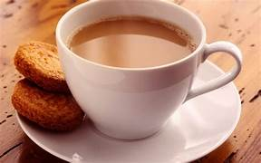
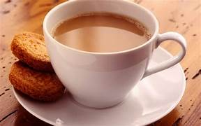

Tea is an aromatic beverage prepared by pouring hot or boiling water over cured or fresh leaves of Camellia sinensis, an evergreen shrub native to East Asia which probably originated in the borderlands of southwestern China and northern Myanmar.Tea is also made, but rarely, from the leaves of Camellia taliensis.After plain water, tea is the most widely consumed drink in the world.There are many different types of tea; some have a cooling, slightly bitter, and astringent flavour,[10] while others have profiles that include sweet, nutty, floral, or grassy notes. Tea has a stimulating effect in humans primarily due to its caffeine content.
.jpg ) 
